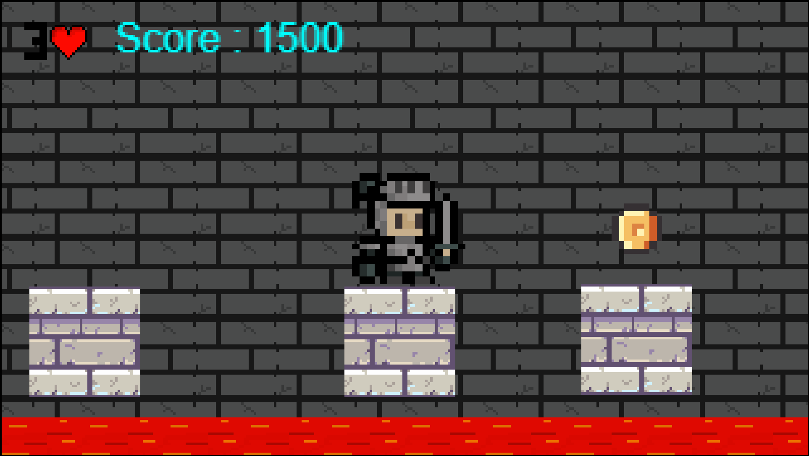
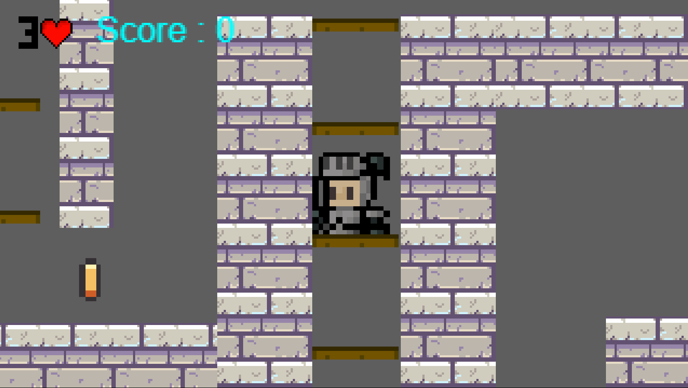
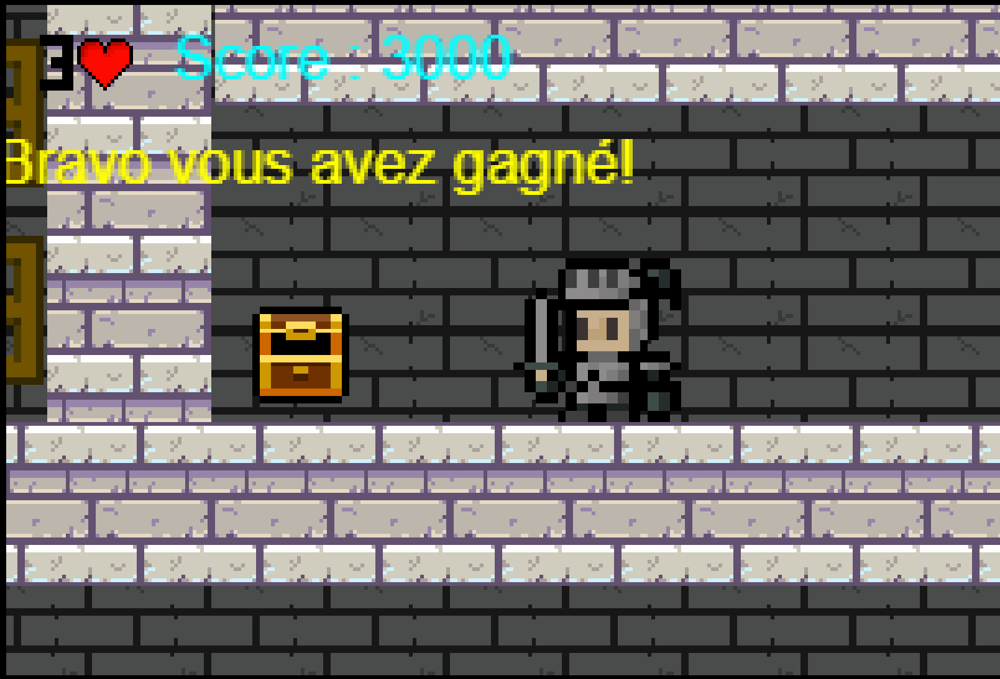

Jumping Knight
Jeu vidéo / Projet de stage / Solo
Jeu vidéo / Projet de stage / Solo

Dans ce jeu, le joueur incarne un chevalier qui saute de plateforme en plateforme afin de progresser dans le niveau et atteindre le trésor final.
Tout au long du parcours, il doit éviter ou éliminer des squelettes dangereux. Les ennemis peuvent être vaincus en leur sautant sur la tête, mais une mauvaise gestion des déplacements entraîne la mort du joueur.
J'ai développé le système de déplacement, la gestion de la vie et des conditions de mort, ainsi que le level design afin de proposer une progression cohérente et équilibrée.

